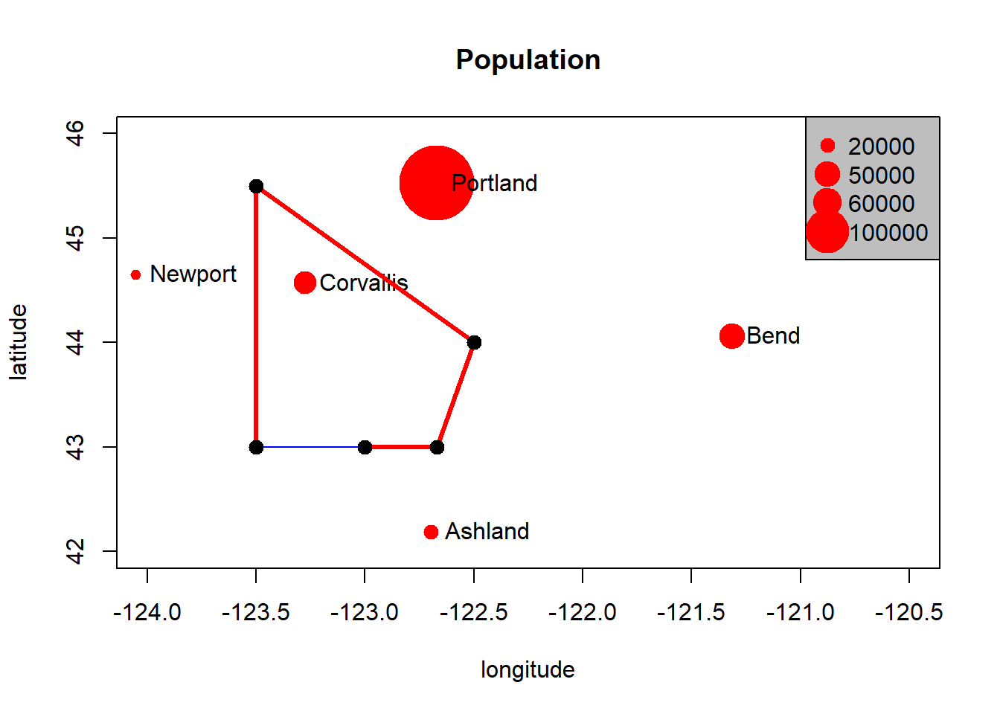
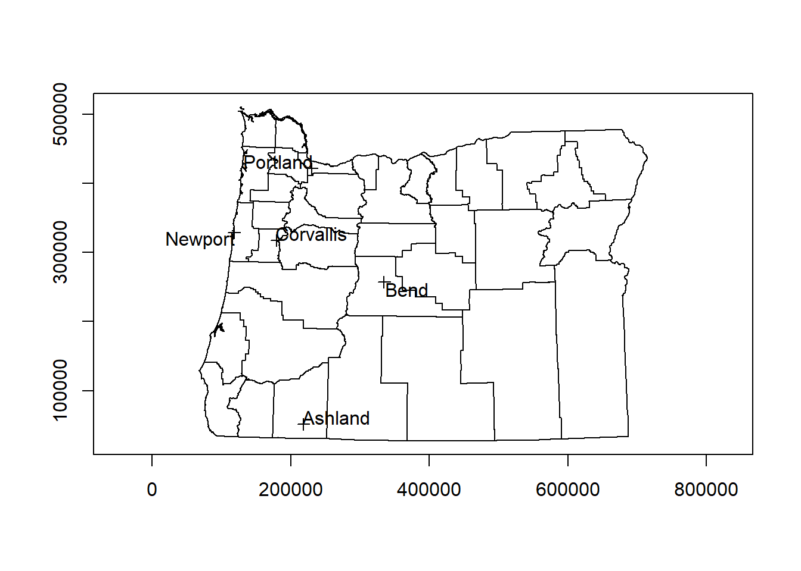
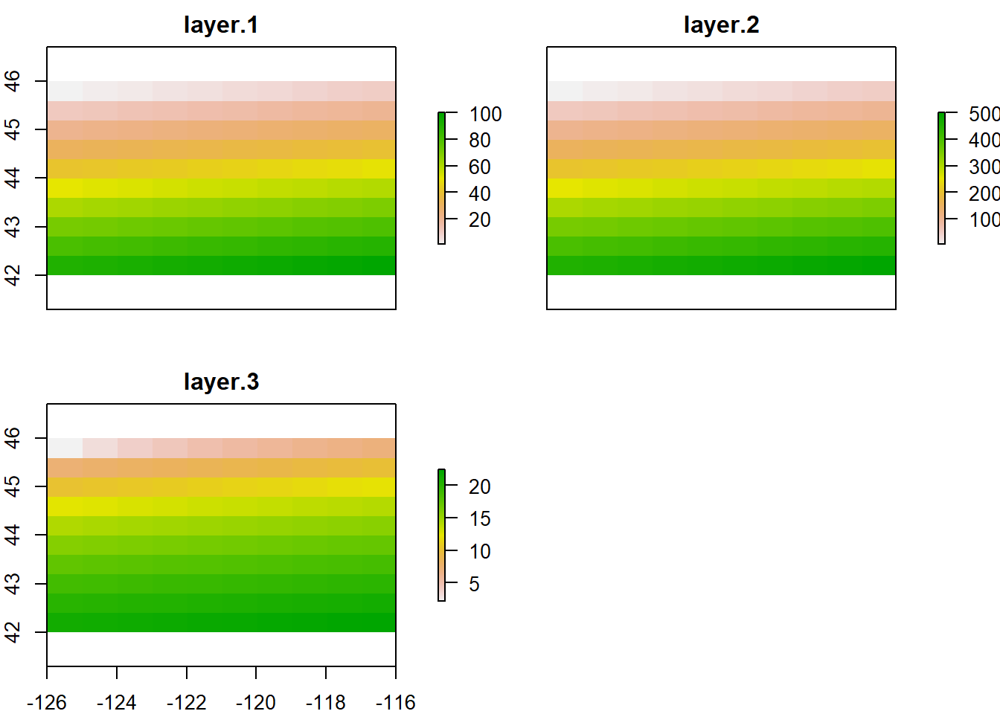
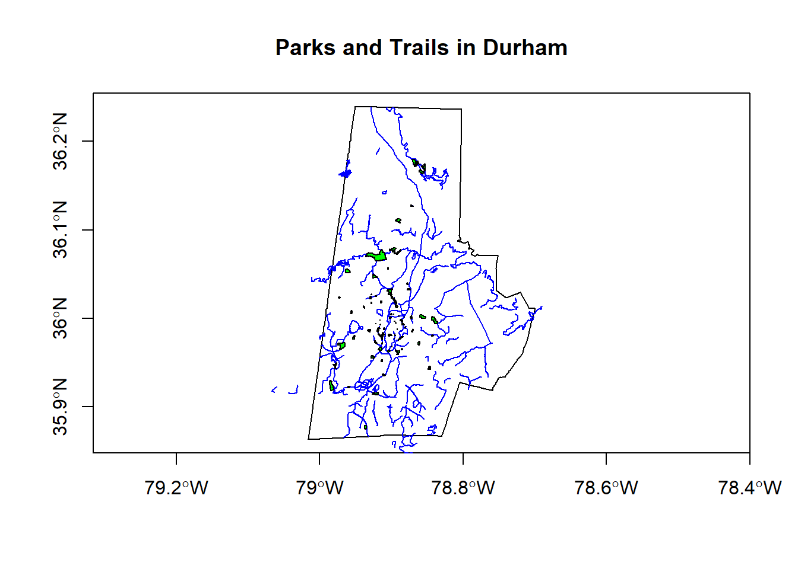

Spatial Objects
Lesson Goals
- Understand R representation of vector and raster spatial data
- Familiarity with R packages for reading, writing, and dealing with vector and raster data
- Understand spatial file types supported by R spatial packages
- Learn to pull spatial data from online sources into R
Spatial Data
We can represent spatial data as discrete locations (points, lines or polygons) or as continuous phenomena without natural boundaries. We typically represent the former type of data (discrete locations) as vector data, with an associated geometry or shape, and some attributes with information about the locations. Examples are:
- state boundaries with state name and population
- rivers with their flow volume and names
- polygons of watersheds with their names and associated landscape information
We represent the latter type of data (continuous spatial fields) with rasters - these would be things such as elevation, precipitation, and atmospheric deposition for instance.
Basic data structures in R can represent spatial data - all we need is some vectors with location and attribute information - below we generate cites with population and make a map with a legend:
cities <- c('Ashland','Corvallis','Bend','Portland','Newport')
longitude <- c(-122.699, -123.275, -121.313, -122.670, -124.054)
latitude <- c(42.189, 44.57, 44.061, 45.523, 44.652)
population <- c(20062,50297,61362,537557,9603)
locs <- cbind(longitude, latitude)
plot(locs, cex=sqrt(population*.0002), pch=20, col='red',
main='Population', xlim = c(-124,-120.5), ylim = c(42, 46))
text(locs, cities, pos=4)
# Add a legend
breaks <- c(20000, 50000, 60000, 100000)
options(scipen=3)
legend("topright", legend=breaks, pch=20, pt.cex=1+breaks/20000,
col='red', bg='gray')
We can add a random polygon and map this as well:
cities <- c('Ashland','Corvallis','Bend','Portland','Newport')
longitude <- c(-122.699, -123.275, -121.313, -122.670, -124.054)
latitude <- c(42.189, 44.57, 44.061, 45.523, 44.652)
population <- c(20062,50297,61362,537557,9603)
locs <- cbind(longitude, latitude)
plot(locs, cex=sqrt(population*.0002), pch=20, col='red',
main='Population', xlim = c(-124,-120.5), ylim = c(42, 46))
text(locs, cities, pos=4)
# Add a legend
breaks <- c(20000, 50000, 60000, 100000)
options(scipen=3)
legend("topright", legend=breaks, pch=20, pt.cex=1+breaks/20000,
col='red', bg='gray')
# Add polygon
lon <- c(-123.5, -123.5, -122.5, -122.670, -123)
lat <- c(43, 45.5, 44, 43, 43)
x <- cbind(lon, lat)
polygon(x, border='blue')
lines(x, lwd=3, col='red')
points(x, cex=2, pch=20)
We can see in this toy example that numeric vectors can represent locations in R for simple mapping. Points just need to be a pair of numbers in cartesian space, and lines and polygons are just a number of these points (note that polygons are closed by having their first point coincide with last point which the polygon function in base R graphics takes care of).
You can do simple things with this spatial representation using basic R structures, but it breaks down quickly if you want to ask any spatial questions - for instance using the example above, how would we figure out the nearest city to Corvallis? Or imagine the polygon is a county and we wanted to know what cities are within the county?
So what information do we need to properly define spatial vector data and perform spatial operations?
- A coordinate reference system
- A bounding box or extent
- ?
Vector Data with sp
We’re going to quickly review how spatial data was standardized in recent years using the base package sp. It’s informative to understand the structure of sp objects, and a number of packages still depend on sp, but this is changing rapidly and the R spatial vector world is rapdily moving toward adaptation of the newer sf package, so the bulk of our vector work will be using sf.
One reason it’s worth still going over sp, even though you’ll soon find sf is far superior in a number of ways, is that numerous packages are currently built using the sp object structure, so there’s a need to learn it to navigate current R spatial ecosystem. The image below is from Colin Gillespie’s recent tweet showing major packages and dependies in R:

CRANdependencies
And below is a figure (with corresponding code you can run) that I put together based on a figure in Geocomputation with R - the take home is that sp is still the most-used spatial package in R despite the growth of sf.
# devtools::install_github("metacran/cranlogs")
library(cranlogs)
library(ggplot2)
library(lubridate)
library(dplyr)
stats <- cran_downloads(from = "2013-01-01", to = "2018-08-22",packages = c("sp", "sf", "raster", "ggmap", "mapview"))
monthly_stats <- stats %>%
group_by(month=floor_date(date, "month"), package) %>%
summarize(amount=sum(count))
ggplot(monthly_stats, aes(x=month, y=amount, group = package, colour = package)) + geom_line() 
Handling of spatial data in R was standardized in recent years through the base package sp, which uses ‘new-style’ S4 classes in R that use formal class definitions and are closer to object-oriented systems than standard S3 classes in R.
The best source to learn about sp and fundamentals of spatial analysis in R is Roger Bivand’s book Applied Spatial Data Analysis in R
sp objects inherit from the basic spatial class, which has two ‘slots’ in R new-style class lingo. From the Bivand book above, here’s what this looks like (Blue at top of each box is the class name, items in white are the slots, arrows show inheritance between classes):

SpatialClassesFig1
Let’s take a look at this in R - run the following R code in your R console (or from source):
library(sp)
getClass("Spatial")## Class "Spatial" [package "sp"]
##
## Slots:
##
## Name: bbox proj4string
## Class: matrix CRS
##
## Known Subclasses:
## Class "SpatialPoints", directly
## Class "SpatialMultiPoints", directly
## Class "SpatialGrid", directly
## Class "SpatialLines", directly
## Class "SpatialPolygons", directly
## Class "SpatialPointsDataFrame", by class "SpatialPoints", distance 2
## Class "SpatialPixels", by class "SpatialPoints", distance 2
## Class "SpatialMultiPointsDataFrame", by class "SpatialMultiPoints", distance 2
## Class "SpatialGridDataFrame", by class "SpatialGrid", distance 2
## Class "SpatialLinesDataFrame", by class "SpatialLines", distance 2
## Class "SpatialPixelsDataFrame", by class "SpatialPoints", distance 3
## Class "SpatialPolygonsDataFrame", by class "SpatialPolygons", distance 2We can see from this that a basic sp spatial object has to have two ‘slots’ - a bounding box and a ‘proj4string’ - this is the prefered format in R for a coordinate reference system (CRS) - either projected or unprojected. We can also see, from the figure above, that building off of the Spatial class, to have a SpatialPointsobject we also need the actual matrix of coordinates that define those points. From there, we can build up to a SpatialPointsDataFrame by simply adding a data frame of attributes to associate with those points. Let’s step through creating an sp SpatialPointsDataFrame using our hypothetical cities data we created earlier.
cities <- c('Ashland','Corvallis','Bend','Portland','Newport')
longitude <- c(-122.699, -123.275, -121.313, -122.670, -124.054)
latitude <- c(42.189, 44.57, 44.061, 45.523, 44.652)
population <- c(20062,50297,61362,537557,9603)
coords <- data.frame(longitude, latitude)
dat <- data.frame(cities, population)
pts <- SpatialPointsDataFrame(coords, dat)
print(dat)## cities population
## 1 Ashland 20062
## 2 Corvallis 50297
## 3 Bend 61362
## 4 Portland 537557
## 5 Newport 9603print(pts)## coordinates cities population
## 1 (-122.699, 42.189) Ashland 20062
## 2 (-123.275, 44.57) Corvallis 50297
## 3 (-121.313, 44.061) Bend 61362
## 4 (-122.67, 45.523) Portland 537557
## 5 (-124.054, 44.652) Newport 9603We first created vectors of city names, latitude, longitude, and population. Then we made a matix of the longitude and latitude vectors (note that convention is always longitude first!). Then we construct a data frame of our city names and population. Finally, we use SpatialPointsDataFrame as a method call on our matrix of coordinates and data frame to generate a SpatialPointsDataFrame object.
Conveniently, our base R plot method works with our newly created SpatialPointsDataFrame, and we can add labels as well one way using the maptools package:
library(maptools)
plot(pts, axes=T)
pointLabel(coordinates(pts),labels=pts$cities)
Pop quiz - why doesn’t this initial map look quite right?
Hint - run summary on pts:
summary(pts)## Object of class SpatialPointsDataFrame
## Coordinates:
## min max
## longitude -124.054 -121.313
## latitude 42.189 45.523
## Is projected: NA
## proj4string : [NA]
## Number of points: 5
## Data attributes:
## cities population
## Ashland :1 Min. : 9603
## Bend :1 1st Qu.: 20062
## Corvallis:1 Median : 50297
## Newport :1 Mean :135776
## Portland :1 3rd Qu.: 61362
## Max. :537557The summary method on our SpatialPointsDataFrame gives us a nice quick synopsis of the ‘slots’ that make up our sp object - str shows the full detail:
str(pts)## Formal class 'SpatialPointsDataFrame' [package "sp"] with 5 slots
## ..@ data :'data.frame': 5 obs. of 2 variables:
## .. ..$ cities : Factor w/ 5 levels "Ashland","Bend",..: 1 3 2 5 4
## .. ..$ population: num [1:5] 20062 50297 61362 537557 9603
## ..@ coords.nrs : num(0)
## ..@ coords : num [1:5, 1:2] -123 -123 -121 -123 -124 ...
## .. ..- attr(*, "dimnames")=List of 2
## .. .. ..$ : NULL
## .. .. ..$ : chr [1:2] "longitude" "latitude"
## ..@ bbox : num [1:2, 1:2] -124.1 42.2 -121.3 45.5
## .. ..- attr(*, "dimnames")=List of 2
## .. .. ..$ : chr [1:2] "longitude" "latitude"
## .. .. ..$ : chr [1:2] "min" "max"
## ..@ proj4string:Formal class 'CRS' [package "sp"] with 1 slot
## .. .. ..@ projargs: chr NAMeet your new friend the @ symbol - this is how you access slots in an S4 object in R - you can think of as similar to $ in accessing columns in a data frame.
So to get the bounding box of our SpatialPointsDataFrame, we simply do:
pts@bbox## min max
## longitude -124.054 -121.313
## latitude 42.189 45.523Or you can use the method directly:
bbox(pts)## min max
## longitude -124.054 -121.313
## latitude 42.189 45.523Here’s an example list of some of the available methods in sp and what they do - see package help for comprehensive list:
| method/class | and what it does |
|---|---|
bbox(x) |
returns the bounding box coordinates |
proj4string(x) |
sets or retrieves projection attributes using the CRS object. |
CRS() |
creates an object of class of coordinate reference system arguments |
spplot(x) |
plots a separate map of all the attributes unless specified otherwise |
coordinates(x) |
returns a matrix with the spatial coordinates. For spatial polygons it returns the centroids. |
over(x, y) |
used for example to retrieve the polygon or grid indexes on a set of points - we’ll come back to that one later |
spsample(x) |
sampling of spatial points within the spatial extent of objects |
A quick foray into coordinate reference systems and projections
Coordinate reference system, or CRS, information in sp uses the proj4string format. A very handy site to use to lookup any projection and get it’s proj4string format is spatialreference.org. A handy resource put together by Melanie Frazier for an R spatial workshop we did several years ago, is here: Overview of Coordinate Reference Systems (CRS) in R.
Dealing with coordinate reference systems and projections is a big part of working with spatial data in R, and it’s relatively straightforward once you get the hang of it. Here are some of the fundamentals:
- CRS can be geographic (lat/lon), projected, or NA in R
- Data with different CRS MUST be transformed to common CRS in R
- Projections in
spare provided in PROJ4 strings in the proj4string slot of an object - http://www.spatialreference.org/
- Useful
rgdalpackage functions:- projInfo(type=‘datum’)
- projInfo(type=‘ellps’)
- projInfo(type=‘proj’)
- For
spclass objects:- To get the CRS: proj4string(x)
- To assign the CRS:
- Use either EPSG code or PROJ.4:
- proj4string(x) <- CRS(“+init=epsg:4269”)
- proj4string(x) <- CRS(“+proj=utm +zone=10 +datum=WGS84”)
- Use either EPSG code or PROJ.4:
- To transform CRS
- x <- spTransform(x, CRS(“+init=epsg:4238”))
- x <- spTransform(x, proj4string(y))
- For rasters (we’ll focus on rasters later, but mention projections here):
- To get the CRS: projection(x)
- To transform CRS: projectRaster(x)
To get back to our SpatialPointsDataFrame we created, hopefully everyone realizes the issue with our original map shape was that our data was unprojected, and actually lacking any coordinate reference system information whatsoever. We have to supply this to our CRS slot for our pts SpatialPointsDataFrame. We know we’re using latitude and longitude values, and usually it’s safe to assume those are either NAD83 Datum or WGS84 - we don’t need to worry about delving into the details here. We can lookup the correct proj4string either using http://www.spatialreference.org/ or the projInfo method in the rgdal package.
Try one of these methods to get the CRS information we need to supply for our points.
Solution:
pts@proj4string <- CRS('+proj=longlat +ellps=GRS80
+datum=NAD83 +no_defs')
summary(pts)## Object of class SpatialPointsDataFrame
## Coordinates:
## min max
## longitude -124.054 -121.313
## latitude 42.189 45.523
## Is projected: FALSE
## proj4string :
## [+proj=longlat +ellps=GRS80 +datum=NAD83 +no_defs +towgs84=0,0,0]
## Number of points: 5
## Data attributes:
## cities population
## Ashland :1 Min. : 9603
## Bend :1 1st Qu.: 20062
## Corvallis:1 Median : 50297
## Newport :1 Mean :135776
## Portland :1 3rd Qu.: 61362
## Max. :537557And let’s plot again
plot(pts, axes=T)
pointLabel(coordinates(pts),labels=pts$cities)
Better - but what did you notice from summary(pts) above in the proj4string information?
We should not just use a geographic CRS, but project to a planar CRS for a better looking map - NAD83 / Oregon Lambert is a good choice - see if you can find the proj4string for this(hint: EPSG code is 2991) and take a minute to look through help for sp package and see if anyone knows how we’d get our pts to this projection.
library(rgdal)
pts <- spTransform(pts, CRS('+proj=lcc +lat_1=43 +lat_2=45.5 +lat_0=41.75 +lon_0=-120.5 +x_0=400000 +y_0=0 +ellps=GRS80 +datum=NAD83 +units=m +no_defs'))
# NOTE# You can also simply use the EPSG code if projection has
pts <- spTransform(pts, CRS('+init=epsg:2991'))
summary(pts)## Object of class SpatialPointsDataFrame
## Coordinates:
## min max
## longitude 118235.38 334875.4
## latitude 51221.03 421439.6
## Is projected: TRUE
## proj4string :
## [+init=epsg:2991 +proj=lcc +lat_1=43 +lat_2=45.5 +lat_0=41.75
## +lon_0=-120.5 +x_0=400000 +y_0=0 +datum=NAD83 +units=m +no_defs
## +ellps=GRS80 +towgs84=0,0,0]
## Number of points: 5
## Data attributes:
## cities population
## Ashland :1 Min. : 9603
## Bend :1 1st Qu.: 20062
## Corvallis:1 Median : 50297
## Newport :1 Mean :135776
## Portland :1 3rd Qu.: 61362
## Max. :537557And now how does it look when we map it? We’re adding a step below using the getData function in the raster package to bring in a counties background - we’ll look at raster more in a bit:
library(raster)
US <- getData("GADM",country="USA",level=2)
OR <-US[US$NAME_1=='Oregon',]
proj4string(pts) == proj4string(OR)## [1] FALSEOR <- spTransform(OR, CRS(proj4string(pts)))
plot(OR, axes=T)
plot(pts, add=T)
pointLabel(coordinates(pts),labels=pts$cities)
Now let’s take a quick look at lines and polygons in sp. We’ll see how these objects are stored in sp to gain a basic understanding, but we’ll then move to the newer sf package for all our vector example exercises.

SpatialClassesFig2
By contructing toy SpatialLines and SpatialPolygons sp objects, and then SpatialLinesDataFrames and SpatialPolygonsDataFrames, we can get a get a feel for the additional details needed to structure these using sp. Example here is from R Spatial. Here we use the raster package which has handy spLines and spPolys functions to create SpatialLines and SpatialPolygons from coordinates(raster package has several useful functions for dealing with vector data as well as raster data).
library(raster)
lon <- c(-116.8, -114.2, -112.9, -111.9, -114.2, -115.4, -117.7)
lat <- c(41.3, 42.9, 42.4, 39.8, 37.6, 38.3, 37.6)
lonlat <- cbind(lon, lat)
lns <- spLines(lonlat, crs='+proj=longlat +datum=WGS84')
lns## class : SpatialLines
## features : 1
## extent : -117.7, -111.9, 37.6, 42.9 (xmin, xmax, ymin, ymax)
## coord. ref. : +proj=longlat +datum=WGS84 +ellps=WGS84 +towgs84=0,0,0pols <- spPolygons(lonlat, crs='+proj=longlat +datum=WGS84')
pols## class : SpatialPolygons
## features : 1
## extent : -117.7, -111.9, 37.6, 42.9 (xmin, xmax, ymin, ymax)
## coord. ref. : +proj=longlat +datum=WGS84 +ellps=WGS84 +towgs84=0,0,0plot(pols, axes=TRUE, las=1)
Take minute to examine the way sp structures these data in slots - use the various methods we’ve discussed so far to examine, such as @, str, and direct method calls on the objects.
str(lns)str(pols)lns@bboxproj4string(lns)# Eacb polygon element has it's own 5 slots to record information for that polygon
slotNames(pols@polygons[[1]])# Here we access the area and label point (centroid) of our polygon using slots
pols@polygons[[1]]@labpt
pols@polygons[[1]]@areaAnd just a quick example of reading in a .csv file with latitude and longitude values to create an sp SpatialPointsDataFrame:
require(RCurl)
gages <- read.csv(text = getURL('https://raw.githubusercontent.com/mhweber/R-User-Group-Spatial-Workshop-2018/gh-pages/data/StreamGages.csv'))
head(gages) ## SOURCE_FEA EVENTTYPE STATION_NM
## 1 14361500 StreamGage ROGUE RIVER AT GRANTS PASS, OR
## 2 14344500 StreamGage N F LTL BUTE CR AB INTKE CANL LKECREEK OREG
## 3 10378500 StreamGage HONEY CREEK NEAR PLUSH,OREG.
## 4 14341500 StreamGage SOUTH FORK LITTLE BUTTE CR NR LAKECREEK,OREG.
## 5 14343000 StreamGage NO FK LITTLE BUTTE CR NR LAKECREEK,OREG.
## 6 13092500 StreamGage MCMULLEN CREEK NR ROCK CREEK ID
## STATE LON_SITE LAT_SITE
## 1 OR -123.3178 42.43040
## 2 OR -122.6011 42.42763
## 3 OR -119.9233 42.42488
## 4 OR -122.6011 42.40819
## 5 OR -122.5373 42.40263
## 6 ID -114.3693 42.39648There are shortcuts to do this, but explicitly we will:
- define the CRS
- make a matrix of our latitude and longitude values
- use the
spSpatialPointsmethod to combine our matrix and CRS into aSpatialPointsobject - Fold the data frame of values back into the
dataslot in aSpatialPointsDataFrame
llCRS <- CRS("+init=epsg:4269")
coords <- gages[, c('LON_SITE', 'LAT_SITE')]
# now stitch together the data frame coordinate fields and the
# projection string to createa SpatialPoints object
gages_sp <- SpatialPoints(coords, proj4string = llCRS)
# summary method gives a description of the spatial object in R
summary(gages_sp)## Object of class SpatialPoints
## Coordinates:
## min max
## LON_SITE -124.66912 -110.44111
## LAT_SITE 41.42768 49.00075
## Is projected: FALSE
## proj4string :
## [+init=epsg:4269 +proj=longlat +datum=NAD83 +no_defs +ellps=GRS80
## +towgs84=0,0,0]
## Number of points: 2771gages_spdf <- SpatialPointsDataFrame(gages_sp, gages)
summary(gages_spdf)## Object of class SpatialPointsDataFrame
## Coordinates:
## min max
## LON_SITE -124.66912 -110.44111
## LAT_SITE 41.42768 49.00075
## Is projected: FALSE
## proj4string :
## [+init=epsg:4269 +proj=longlat +datum=NAD83 +no_defs +ellps=GRS80
## +towgs84=0,0,0]
## Number of points: 2771
## Data attributes:
## SOURCE_FEA EVENTTYPE
## Min. : 10361700 StreamGage:2771
## 1st Qu.: 12331050
## Median : 13069000
## Mean : 14573679
## 3rd Qu.: 13349362
## Max. :1315377299
##
## STATION_NM STATE
## ABERDEEN-SPRINGFIELD CANAL NR SPRINGFIELD ID: 1 WA :1054
## ABERDEEN WASTE NR ABERDEEN ID : 1 ID : 800
## ABERNATHY CREEK NEAR LONGVIEW, WA : 1 OR : 622
## AENEAS LAKE NEAR TONASKET, WA : 1 MT : 220
## Agency Creek near Jocko MT (2) : 1 WY : 52
## AGENCY CREEK NEAR JOCKO, MT : 1 NV : 19
## (Other) :2765 (Other): 4
## LON_SITE LAT_SITE
## Min. :-124.7 Min. :41.43
## 1st Qu.:-122.2 1st Qu.:43.90
## Median :-119.4 Median :45.91
## Mean :-118.6 Mean :45.67
## 3rd Qu.:-115.4 3rd Qu.:47.39
## Max. :-110.4 Max. :49.00
## And a quick look at our gages using plot and plotting PNW states:
PNW <-US[US$NAME_1 %in% c('Oregon','Washington','Idaho'),]
PNW <- spTransform(PNW, CRS(proj4string(gages_spdf)))
plot(PNW, axes=T)
plot(gages_spdf, col='blue', add=T)
Vector Data with sf
The sf package developed by Edzer Pebesma ia an implementation of Simple features, an open standard developed and endorsed by the Open Geospatial Consortium (OGC). Simple Features is a hierarchical data model that represents a wide range of geometry types - it includes all common vector geometry types (but does not include raster) and even allows geometry collections, which can have multiple geometry types in a single object. From the first sf package vignette we see:

sf Objects
The big difference between sf and sp is that sf usesS3 classes rather than S4 as sp does. Simple features are simple data.frame objects that have a geometry list-column, essentially. sf rolls together the functions of three packages from the sp world - sp for the class system, rgdal for reading and writing data, and rgeos for spatial operations using GEOS. The simple feature model will be familiar to folks who use PostGIS, MySQL Spatial Extensions, Oracle Spatial, the OGR component of the GDAL library, GeoJSON and GeoPandas in Python. Simple features are represented with Well-Known text - WKT - and well-known binary formats.
Just as in PostGIS, all functions and methods in sf are prefixed with st_, which stands for ‘spatial and temporal’. An advantage of this prefixing is all commands are easy to find with command-line completion in sf.
Edzar Pebesma has extensive documentation, blog posts and vignettes available for sf here: Simple Features for R. Additionally, see Edzar’s r-spatial blog which has numerous announcements, discussion pieces and tutorials on spatial work in R focused.
A very handy page, if you’re already familiar with the sp ecosystem, is the Migrating page on the sf GitHub wiki.
Here’s a quick synopsis of available methods in sf:
library(sf)
methods(class = 'sf')## [1] $<- [ [[<-
## [4] aggregate anti_join arrange
## [7] as.data.frame cbind coerce
## [10] distinct extent extract
## [13] filter full_join group_by
## [16] identify initialize inner_join
## [19] left_join mask merge
## [22] mutate plot print
## [25] rasterize rbind rename
## [28] right_join sample_frac sample_n
## [31] select semi_join show
## [34] slice slotsFromS3 st_agr
## [37] st_agr<- st_as_sf st_bbox
## [40] st_boundary st_buffer st_cast
## [43] st_centroid st_collection_extract st_convex_hull
## [46] st_coordinates st_crs st_crs<-
## [49] st_difference st_geometry st_geometry<-
## [52] st_intersection st_is st_line_merge
## [55] st_node st_point_on_surface st_polygonize
## [58] st_precision st_segmentize st_set_precision
## [61] st_simplify st_snap st_sym_difference
## [64] st_transform st_triangulate st_union
## [67] st_voronoi st_wrap_dateline st_write
## [70] st_zm summarise transmute
## [73] ungroup
## see '?methods' for accessing help and source codeLet’s start exploring sf using the USGS stream gage .csv file we read in previously. You should still have the gages data.frame loaded in memory - if not, simply pull down from the class repository using code step from previous section.
class(gages)## [1] "data.frame"Now we’ll use the sf approach to make this data.frame with coordinates spatial, just as we did with sp:
gages_sf <- st_as_sf(gages, coords = c("LON_SITE", "LAT_SITE"), crs = 4269)
gages_sf## Simple feature collection with 2771 features and 4 fields
## geometry type: POINT
## dimension: XY
## bbox: xmin: -124.6691 ymin: 41.42768 xmax: -110.4411 ymax: 49.00075
## epsg (SRID): 4269
## proj4string: +proj=longlat +ellps=GRS80 +towgs84=0,0,0,0,0,0,0 +no_defs
## First 10 features:
## SOURCE_FEA EVENTTYPE STATION_NM
## 1 14361500 StreamGage ROGUE RIVER AT GRANTS PASS, OR
## 2 14344500 StreamGage N F LTL BUTE CR AB INTKE CANL LKECREEK OREG
## 3 10378500 StreamGage HONEY CREEK NEAR PLUSH,OREG.
## 4 14341500 StreamGage SOUTH FORK LITTLE BUTTE CR NR LAKECREEK,OREG.
## 5 14343000 StreamGage NO FK LITTLE BUTTE CR NR LAKECREEK,OREG.
## 6 13092500 StreamGage MCMULLEN CREEK NR ROCK CREEK ID
## 7 10378000 StreamGage TWELVEMILE CREEK NEAR PLUSH,OREG.
## 8 10376500 StreamGage FISH CREEK NEAR PLUSH,OREG.
## 9 14378000 StreamGage ILLINOIS R NR SELMA, OREG.
## 10 14342500 StreamGage NO FK LITTLE BUTTE CR AT F L NR LAKECREEK,OREG.
## STATE geometry
## 1 OR POINT (-123.3178 42.4304)
## 2 OR POINT (-122.6011 42.42763)
## 3 OR POINT (-119.9233 42.42488)
## 4 OR POINT (-122.6011 42.40819)
## 5 OR POINT (-122.5373 42.40263)
## 6 ID POINT (-114.3693 42.39648)
## 7 OR POINT (-120.0177 42.38322)
## 8 OR POINT (-119.9011 42.38322)
## 9 OR POINT (-123.8123 42.379)
## 10 OR POINT (-122.3567 42.37625)Let’s break down what we just saw in gages_sf - from the first sf package vignette:

sf Structure
We can see:
- in green a simple feature: a single record, or data.frame row, consisting of attributes and geometry
- in blue a single simple feature geometry (an object of class sfg)
- in red a simple feature list-column (an object of class sfc, which is a column in the data.frame)
Generic plotting works on sf objects as well - take a minute to play with plot our gages - why do we specify $geometry in our plot call?
plot(gages_sf$geometry, axes=T)Raster Data
Package sp does have support for raster data, but we won’t look at it here - support for gridded data in R is best implemented currently with the raster package by Robert Hijmans. The raster package allows you to:
- read and write almost any commonly used raster data format using
rgdal - perform typical raster processing operations such as resampling, projecting, filtering, raster math, etc.
- work with files on disk that are too big to read into memory in R
- run operations quickly since the package relies on back-end C code
The home page for the raster package has links to several well-written vignettes and documentation for the package.
The raster package uses three classes / types of objects to represent raster data - RasterLayer, RasterStack, and RasterBrick - these are all S4 new style classes in R, just like sp classes.
The raster package has not been updated in the last year though- and a new package called stars (spatiotemporal tidy arrays with R) is being developed through an R-Consortium funded project to handle rasters in a way that is both sf and pipe-based workflow friendly. The proposal by by Edzer Pebezma, Michael Sumer, Etienne Racine and Adriano Fantini outlines the approach they are taking - you can play with the development version and check out the package web page but it is still very much in alpha stages.
To familiarize ourselves with the raster package, let’s create an empty RasterLayer object - in order to do this we have to: * define the matrix (rows and columns) * define the spatial bounding box * provide values to the cells
Note that typically we would be reading raster data in from a file rather than creating a raster from scratch. Run through code steps below to familiarize yourself with contsructing a RasterLayer from scratch.
library(raster)
r <- raster(ncol=10, nrow = 10, xmx=-116,xmn=-126,ymn=42,ymx=46)
str(r)## Formal class 'RasterLayer' [package "raster"] with 12 slots
## ..@ file :Formal class '.RasterFile' [package "raster"] with 13 slots
## .. .. ..@ name : chr ""
## .. .. ..@ datanotation: chr "FLT4S"
## .. .. ..@ byteorder : chr "little"
## .. .. ..@ nodatavalue : num -Inf
## .. .. ..@ NAchanged : logi FALSE
## .. .. ..@ nbands : int 1
## .. .. ..@ bandorder : chr "BIL"
## .. .. ..@ offset : int 0
## .. .. ..@ toptobottom : logi TRUE
## .. .. ..@ blockrows : int 0
## .. .. ..@ blockcols : int 0
## .. .. ..@ driver : chr ""
## .. .. ..@ open : logi FALSE
## ..@ data :Formal class '.SingleLayerData' [package "raster"] with 13 slots
## .. .. ..@ values : logi(0)
## .. .. ..@ offset : num 0
## .. .. ..@ gain : num 1
## .. .. ..@ inmemory : logi FALSE
## .. .. ..@ fromdisk : logi FALSE
## .. .. ..@ isfactor : logi FALSE
## .. .. ..@ attributes: list()
## .. .. ..@ haveminmax: logi FALSE
## .. .. ..@ min : num Inf
## .. .. ..@ max : num -Inf
## .. .. ..@ band : int 1
## .. .. ..@ unit : chr ""
## .. .. ..@ names : chr ""
## ..@ legend :Formal class '.RasterLegend' [package "raster"] with 5 slots
## .. .. ..@ type : chr(0)
## .. .. ..@ values : logi(0)
## .. .. ..@ color : logi(0)
## .. .. ..@ names : logi(0)
## .. .. ..@ colortable: logi(0)
## ..@ title : chr(0)
## ..@ extent :Formal class 'Extent' [package "raster"] with 4 slots
## .. .. ..@ xmin: num -126
## .. .. ..@ xmax: num -116
## .. .. ..@ ymin: num 42
## .. .. ..@ ymax: num 46
## ..@ rotated : logi FALSE
## ..@ rotation:Formal class '.Rotation' [package "raster"] with 2 slots
## .. .. ..@ geotrans: num(0)
## .. .. ..@ transfun:function ()
## ..@ ncols : int 10
## ..@ nrows : int 10
## ..@ crs :Formal class 'CRS' [package "sp"] with 1 slot
## .. .. ..@ projargs: chr "+proj=longlat +datum=WGS84 +ellps=WGS84 +towgs84=0,0,0"
## ..@ history : list()
## ..@ z : list()You see we have our usual S4 slot structure with a RasterLayer object. Simply typing the name of the RasterLayer gives a succinct summary of the object at the console.
r## class : RasterLayer
## dimensions : 10, 10, 100 (nrow, ncol, ncell)
## resolution : 1, 0.4 (x, y)
## extent : -126, -116, 42, 46 (xmin, xmax, ymin, ymax)
## coord. ref. : +proj=longlat +datum=WGS84 +ellps=WGS84 +towgs84=0,0,0A few quick questions to work through-
- what is the minimal data required to define a
RasterLayer? - What is odd here about the CRS?
- Based on our work with
sp, how do we pull out just the CRS for our rrasterLayer? Hint - what is another way besides str(r) to see slots available with ourRasterLayerr? - Building on this, what is the code to pull out just our xmin value in our extent, or bounding box?
r@crs
# or
crs(r)
slotNames(r)
r@extent[1]
extent(r)[1]So far we just have a container with no values (try plotting what we have so far) - let’s provide values to the cells using the runif function to derive random values from the uniform distribution
r[] <- runif(n=ncell(r))
r## class : RasterLayer
## dimensions : 10, 10, 100 (nrow, ncol, ncell)
## resolution : 1, 0.4 (x, y)
## extent : -126, -116, 42, 46 (xmin, xmax, ymin, ymax)
## coord. ref. : +proj=longlat +datum=WGS84 +ellps=WGS84 +towgs84=0,0,0
## data source : in memory
## names : layer
## values : 0.02015334, 0.981971 (min, max)Notice the different output now when typing ‘r?’ An important point to make here is that objects in the raster package can be either in memory or on disk - not the value for our RasterLayer r of ‘data source’. If this were a large raster on disk, the value would be the path to the file on disk.
We can test this as well using methods in raster (and test if the raster has values too):
inMemory(r)## [1] TRUEfromDisk(r)## [1] FALSEhasValues(r)## [1] TRUEWe can plot now as well with base R plot:
plot(r)
We can also overwrite the cell values for our raster:
values(r) <- 1:ncell(r)
values(r)## [1] 1 2 3 4 5 6 7 8 9 10 11 12 13 14 15 16 17
## [18] 18 19 20 21 22 23 24 25 26 27 28 29 30 31 32 33 34
## [35] 35 36 37 38 39 40 41 42 43 44 45 46 47 48 49 50 51
## [52] 52 53 54 55 56 57 58 59 60 61 62 63 64 65 66 67 68
## [69] 69 70 71 72 73 74 75 76 77 78 79 80 81 82 83 84 85
## [86] 86 87 88 89 90 91 92 93 94 95 96 97 98 99 100You can access raster values via direct indexing or line, column indexing - take a minute to see how this works using raster r we just created - the syntax is:
r[i]
r[line, column]How is raster data storage unlike a matrix in R? You can create a matrix with same dimensions and values and compare if you want:
m <- matrix (1:100, nrow=10, ncol=10)
m[1,2]## [1] 11r[1,2]##
## 2RasterBrick and RasterStack are the two additional classes in raster and handle multiple raster layers. They differ from each other in how they handle multiple layers, file formats they support, their representation and their processing speed. A RasterBrick typicallly is a single multi-layer file such as a multispectral image. A RasterStack can virtually connect several RasterLayer objects in memory and allows pixel-based calculations on separate raster layers, while a RasterBrick has to refer to a single multi-layer file or multi-layer object. Note that methods that operate on either a RasterStack or RasterBrick usually return a RasterBrick, and processing will be mor efficient on a RasterBrick object.
It’s easy to manipulate our RasterLayer to make a couple new layers, and then stack layers:
r2 <- r * 50
r3 <- sqrt(r * 5)
s <- stack(r, r2, r3)
s## class : RasterStack
## dimensions : 10, 10, 100, 3 (nrow, ncol, ncell, nlayers)
## resolution : 1, 0.4 (x, y)
## extent : -126, -116, 42, 46 (xmin, xmax, ymin, ymax)
## coord. ref. : +proj=longlat +datum=WGS84 +ellps=WGS84 +towgs84=0,0,0
## names : layer.1, layer.2, layer.3
## min values : 1.000000, 50.000000, 2.236068
## max values : 100.00000, 5000.00000, 22.36068plot(s)
Same process for generating a raster brick (here I make layers and create a RasterBrick in same step):
b <- brick(x=c(r, r * 50, sqrt(r * 5)))
b## class : RasterBrick
## dimensions : 10, 10, 100, 3 (nrow, ncol, ncell, nlayers)
## resolution : 1, 0.4 (x, y)
## extent : -126, -116, 42, 46 (xmin, xmax, ymin, ymax)
## coord. ref. : +proj=longlat +datum=WGS84 +ellps=WGS84 +towgs84=0,0,0
## data source : in memory
## names : layer.1, layer.2, layer.3
## min values : 1.000000, 50.000000, 2.236068
## max values : 100.00000, 5000.00000, 22.36068Geographic Data I/O
For reading and writing vector and raster data in R, the three primary packages you’ll use are:
rgdalorsffor vector formats such as ESRI Shapefiles, GeoJSON, and GPX - both packages use OGR, which is a library under the GDAL source tree,under the hoodrasterfor raster formats such as GeoTIFF or ESRI or ASCII grid using GDAL under the hood
We can quickly discover supported I/O vector formats either via rgdal or sf:
ogrDrivers()## name long_name
## 1 AeronavFAA Aeronav FAA
## 2 AmigoCloud AmigoCloud
## 3 ARCGEN Arc/Info Generate
## 4 AVCBin Arc/Info Binary Coverage
## 5 AVCE00 Arc/Info E00 (ASCII) Coverage
## 6 BNA Atlas BNA
## 7 CAD AutoCAD Driver
## 8 Carto Carto
## 9 Cloudant Cloudant / CouchDB
## 10 CouchDB CouchDB / GeoCouch
## 11 CSV Comma Separated Value (.csv)
## 12 CSW OGC CSW (Catalog Service for the Web)
## 13 DGN Microstation DGN
## 14 DXF AutoCAD DXF
## 15 EDIGEO French EDIGEO exchange format
## 16 ElasticSearch Elastic Search
## 17 ESRI Shapefile ESRI Shapefile
## 18 Geoconcept Geoconcept
## 19 GeoJSON GeoJSON
## 20 Geomedia Geomedia .mdb
## 21 GeoRSS GeoRSS
## 22 GFT Google Fusion Tables
## 23 GML Geography Markup Language (GML)
## 24 GPKG GeoPackage
## 25 GPSBabel GPSBabel
## 26 GPSTrackMaker GPSTrackMaker
## 27 GPX GPX
## 28 HTF Hydrographic Transfer Vector
## 29 HTTP HTTP Fetching Wrapper
## 30 Idrisi Idrisi Vector (.vct)
## 31 JML OpenJUMP JML
## 32 KML Keyhole Markup Language (KML)
## 33 MapInfo File MapInfo File
## 34 Memory Memory
## 35 MSSQLSpatial Microsoft SQL Server Spatial Database
## 36 netCDF Network Common Data Format
## 37 ODBC ODBC
## 38 ODS Open Document/ LibreOffice / OpenOffice Spreadsheet
## 39 OGR_GMT GMT ASCII Vectors (.gmt)
## 40 OGR_PDS Planetary Data Systems TABLE
## 41 OGR_SDTS SDTS
## 42 OGR_VRT VRT - Virtual Datasource
## 43 OpenAir OpenAir
## 44 OpenFileGDB ESRI FileGDB
## 45 OSM OpenStreetMap XML and PBF
## 46 PCIDSK PCIDSK Database File
## 47 PDF Geospatial PDF
## 48 PGDUMP PostgreSQL SQL dump
## 49 PGeo ESRI Personal GeoDatabase
## 50 PLSCENES Planet Labs Scenes API
## 51 PostgreSQL PostgreSQL/PostGIS
## 52 REC EPIInfo .REC
## 53 S57 IHO S-57 (ENC)
## 54 SEGUKOOA SEG-P1 / UKOOA P1/90
## 55 SEGY SEG-Y
## 56 Selafin Selafin
## 57 SQLite SQLite / Spatialite
## 58 SUA Tim Newport-Peace's Special Use Airspace Format
## 59 SVG Scalable Vector Graphics
## 60 SXF Storage and eXchange Format
## 61 TIGER U.S. Census TIGER/Line
## 62 UK .NTF UK .NTF
## 63 VDV VDV-451/VDV-452/INTREST Data Format
## 64 VFK Czech Cadastral Exchange Data Format
## 65 Walk Walk
## 66 WAsP WAsP .map format
## 67 WFS OGC WFS (Web Feature Service)
## 68 XLS MS Excel format
## 69 XLSX MS Office Open XML spreadsheet
## 70 XPlane X-Plane/Flightgear aeronautical data
## write copy isVector
## 1 FALSE FALSE TRUE
## 2 TRUE FALSE TRUE
## 3 FALSE FALSE TRUE
## 4 FALSE FALSE TRUE
## 5 FALSE FALSE TRUE
## 6 TRUE FALSE TRUE
## 7 FALSE FALSE TRUE
## 8 TRUE FALSE TRUE
## 9 TRUE FALSE TRUE
## 10 TRUE FALSE TRUE
## 11 TRUE FALSE TRUE
## 12 FALSE FALSE TRUE
## 13 TRUE FALSE TRUE
## 14 TRUE FALSE TRUE
## 15 FALSE FALSE TRUE
## 16 TRUE FALSE TRUE
## 17 TRUE FALSE TRUE
## 18 TRUE FALSE TRUE
## 19 TRUE FALSE TRUE
## 20 FALSE FALSE TRUE
## 21 TRUE FALSE TRUE
## 22 TRUE FALSE TRUE
## 23 TRUE FALSE TRUE
## 24 TRUE TRUE TRUE
## 25 TRUE FALSE TRUE
## 26 TRUE FALSE TRUE
## 27 TRUE FALSE TRUE
## 28 FALSE FALSE TRUE
## 29 FALSE FALSE TRUE
## 30 FALSE FALSE TRUE
## 31 TRUE FALSE TRUE
## 32 TRUE FALSE TRUE
## 33 TRUE FALSE TRUE
## 34 TRUE FALSE TRUE
## 35 TRUE FALSE TRUE
## 36 TRUE TRUE TRUE
## 37 TRUE FALSE TRUE
## 38 TRUE FALSE TRUE
## 39 TRUE FALSE TRUE
## 40 FALSE FALSE TRUE
## 41 FALSE FALSE TRUE
## 42 FALSE FALSE TRUE
## 43 FALSE FALSE TRUE
## 44 FALSE FALSE TRUE
## 45 FALSE FALSE TRUE
## 46 TRUE FALSE TRUE
## 47 TRUE TRUE TRUE
## 48 TRUE FALSE TRUE
## 49 FALSE FALSE TRUE
## 50 FALSE FALSE TRUE
## 51 TRUE FALSE TRUE
## 52 FALSE FALSE TRUE
## 53 TRUE FALSE TRUE
## 54 FALSE FALSE TRUE
## 55 FALSE FALSE TRUE
## 56 TRUE FALSE TRUE
## 57 TRUE FALSE TRUE
## 58 FALSE FALSE TRUE
## 59 FALSE FALSE TRUE
## 60 FALSE FALSE TRUE
## 61 TRUE FALSE TRUE
## 62 FALSE FALSE TRUE
## 63 TRUE FALSE TRUE
## 64 FALSE FALSE TRUE
## 65 FALSE FALSE TRUE
## 66 TRUE FALSE TRUE
## 67 FALSE FALSE TRUE
## 68 FALSE FALSE TRUE
## 69 TRUE FALSE TRUE
## 70 FALSE FALSE TRUEst_drivers()## name
## PCIDSK PCIDSK
## netCDF netCDF
## JP2OpenJPEG JP2OpenJPEG
## JPEG2000 JPEG2000
## PDF PDF
## ESRI Shapefile ESRI Shapefile
## MapInfo File MapInfo File
## UK .NTF UK .NTF
## OGR_SDTS OGR_SDTS
## S57 S57
## DGN DGN
## OGR_VRT OGR_VRT
## REC REC
## Memory Memory
## BNA BNA
## CSV CSV
## GML GML
## GPX GPX
## KML KML
## GeoJSON GeoJSON
## OGR_GMT OGR_GMT
## GPKG GPKG
## SQLite SQLite
## ODBC ODBC
## WAsP WAsP
## PGeo PGeo
## MSSQLSpatial MSSQLSpatial
## PostgreSQL PostgreSQL
## MySQL MySQL
## OpenFileGDB OpenFileGDB
## XPlane XPlane
## DXF DXF
## CAD CAD
## Geoconcept Geoconcept
## GeoRSS GeoRSS
## GPSTrackMaker GPSTrackMaker
## VFK VFK
## PGDUMP PGDUMP
## OSM OSM
## GPSBabel GPSBabel
## SUA SUA
## OpenAir OpenAir
## OGR_PDS OGR_PDS
## WFS WFS
## HTF HTF
## AeronavFAA AeronavFAA
## Geomedia Geomedia
## EDIGEO EDIGEO
## GFT GFT
## SVG SVG
## CouchDB CouchDB
## Cloudant Cloudant
## Idrisi Idrisi
## ARCGEN ARCGEN
## SEGUKOOA SEGUKOOA
## SEGY SEGY
## XLS XLS
## ODS ODS
## XLSX XLSX
## ElasticSearch ElasticSearch
## Walk Walk
## Carto Carto
## AmigoCloud AmigoCloud
## SXF SXF
## Selafin Selafin
## JML JML
## PLSCENES PLSCENES
## CSW CSW
## VDV VDV
## TIGER TIGER
## AVCBin AVCBin
## AVCE00 AVCE00
## HTTP HTTP
## long_name
## PCIDSK PCIDSK Database File
## netCDF Network Common Data Format
## JP2OpenJPEG JPEG-2000 driver based on OpenJPEG library
## JPEG2000 JPEG-2000 part 1 (ISO/IEC 15444-1), based on Jasper library
## PDF Geospatial PDF
## ESRI Shapefile ESRI Shapefile
## MapInfo File MapInfo File
## UK .NTF UK .NTF
## OGR_SDTS SDTS
## S57 IHO S-57 (ENC)
## DGN Microstation DGN
## OGR_VRT VRT - Virtual Datasource
## REC EPIInfo .REC
## Memory Memory
## BNA Atlas BNA
## CSV Comma Separated Value (.csv)
## GML Geography Markup Language (GML)
## GPX GPX
## KML Keyhole Markup Language (KML)
## GeoJSON GeoJSON
## OGR_GMT GMT ASCII Vectors (.gmt)
## GPKG GeoPackage
## SQLite SQLite / Spatialite
## ODBC ODBC
## WAsP WAsP .map format
## PGeo ESRI Personal GeoDatabase
## MSSQLSpatial Microsoft SQL Server Spatial Database
## PostgreSQL PostgreSQL/PostGIS
## MySQL MySQL
## OpenFileGDB ESRI FileGDB
## XPlane X-Plane/Flightgear aeronautical data
## DXF AutoCAD DXF
## CAD AutoCAD Driver
## Geoconcept Geoconcept
## GeoRSS GeoRSS
## GPSTrackMaker GPSTrackMaker
## VFK Czech Cadastral Exchange Data Format
## PGDUMP PostgreSQL SQL dump
## OSM OpenStreetMap XML and PBF
## GPSBabel GPSBabel
## SUA Tim Newport-Peace's Special Use Airspace Format
## OpenAir OpenAir
## OGR_PDS Planetary Data Systems TABLE
## WFS OGC WFS (Web Feature Service)
## HTF Hydrographic Transfer Vector
## AeronavFAA Aeronav FAA
## Geomedia Geomedia .mdb
## EDIGEO French EDIGEO exchange format
## GFT Google Fusion Tables
## SVG Scalable Vector Graphics
## CouchDB CouchDB / GeoCouch
## Cloudant Cloudant / CouchDB
## Idrisi Idrisi Vector (.vct)
## ARCGEN Arc/Info Generate
## SEGUKOOA SEG-P1 / UKOOA P1/90
## SEGY SEG-Y
## XLS MS Excel format
## ODS Open Document/ LibreOffice / OpenOffice Spreadsheet
## XLSX MS Office Open XML spreadsheet
## ElasticSearch Elastic Search
## Walk Walk
## Carto Carto
## AmigoCloud AmigoCloud
## SXF Storage and eXchange Format
## Selafin Selafin
## JML OpenJUMP JML
## PLSCENES Planet Labs Scenes API
## CSW OGC CSW (Catalog Service for the Web)
## VDV VDV-451/VDV-452/INTREST Data Format
## TIGER U.S. Census TIGER/Line
## AVCBin Arc/Info Binary Coverage
## AVCE00 Arc/Info E00 (ASCII) Coverage
## HTTP HTTP Fetching Wrapper
## write copy is_raster is_vector vsi
## PCIDSK TRUE FALSE TRUE TRUE TRUE
## netCDF TRUE TRUE TRUE TRUE FALSE
## JP2OpenJPEG FALSE TRUE TRUE TRUE TRUE
## JPEG2000 FALSE TRUE TRUE TRUE TRUE
## PDF TRUE TRUE TRUE TRUE FALSE
## ESRI Shapefile TRUE FALSE FALSE TRUE TRUE
## MapInfo File TRUE FALSE FALSE TRUE TRUE
## UK .NTF FALSE FALSE FALSE TRUE FALSE
## OGR_SDTS FALSE FALSE FALSE TRUE FALSE
## S57 TRUE FALSE FALSE TRUE TRUE
## DGN TRUE FALSE FALSE TRUE FALSE
## OGR_VRT FALSE FALSE FALSE TRUE TRUE
## REC FALSE FALSE FALSE TRUE FALSE
## Memory TRUE FALSE FALSE TRUE FALSE
## BNA TRUE FALSE FALSE TRUE TRUE
## CSV TRUE FALSE FALSE TRUE TRUE
## GML TRUE FALSE FALSE TRUE TRUE
## GPX TRUE FALSE FALSE TRUE TRUE
## KML TRUE FALSE FALSE TRUE TRUE
## GeoJSON TRUE FALSE FALSE TRUE TRUE
## OGR_GMT TRUE FALSE FALSE TRUE FALSE
## GPKG TRUE TRUE TRUE TRUE TRUE
## SQLite TRUE FALSE FALSE TRUE TRUE
## ODBC TRUE FALSE FALSE TRUE FALSE
## WAsP TRUE FALSE FALSE TRUE TRUE
## PGeo FALSE FALSE FALSE TRUE FALSE
## MSSQLSpatial TRUE FALSE FALSE TRUE FALSE
## PostgreSQL TRUE FALSE FALSE TRUE FALSE
## MySQL TRUE FALSE FALSE TRUE FALSE
## OpenFileGDB FALSE FALSE FALSE TRUE TRUE
## XPlane FALSE FALSE FALSE TRUE TRUE
## DXF TRUE FALSE FALSE TRUE TRUE
## CAD FALSE FALSE TRUE TRUE TRUE
## Geoconcept TRUE FALSE FALSE TRUE FALSE
## GeoRSS TRUE FALSE FALSE TRUE TRUE
## GPSTrackMaker TRUE FALSE FALSE TRUE TRUE
## VFK FALSE FALSE FALSE TRUE FALSE
## PGDUMP TRUE FALSE FALSE TRUE TRUE
## OSM FALSE FALSE FALSE TRUE TRUE
## GPSBabel TRUE FALSE FALSE TRUE FALSE
## SUA FALSE FALSE FALSE TRUE TRUE
## OpenAir FALSE FALSE FALSE TRUE TRUE
## OGR_PDS FALSE FALSE FALSE TRUE TRUE
## WFS FALSE FALSE FALSE TRUE TRUE
## HTF FALSE FALSE FALSE TRUE TRUE
## AeronavFAA FALSE FALSE FALSE TRUE TRUE
## Geomedia FALSE FALSE FALSE TRUE FALSE
## EDIGEO FALSE FALSE FALSE TRUE TRUE
## GFT TRUE FALSE FALSE TRUE FALSE
## SVG FALSE FALSE FALSE TRUE TRUE
## CouchDB TRUE FALSE FALSE TRUE FALSE
## Cloudant TRUE FALSE FALSE TRUE FALSE
## Idrisi FALSE FALSE FALSE TRUE TRUE
## ARCGEN FALSE FALSE FALSE TRUE TRUE
## SEGUKOOA FALSE FALSE FALSE TRUE TRUE
## SEGY FALSE FALSE FALSE TRUE TRUE
## XLS FALSE FALSE FALSE TRUE FALSE
## ODS TRUE FALSE FALSE TRUE TRUE
## XLSX TRUE FALSE FALSE TRUE TRUE
## ElasticSearch TRUE FALSE FALSE TRUE FALSE
## Walk FALSE FALSE FALSE TRUE FALSE
## Carto TRUE FALSE FALSE TRUE FALSE
## AmigoCloud TRUE FALSE FALSE TRUE FALSE
## SXF FALSE FALSE FALSE TRUE FALSE
## Selafin TRUE FALSE FALSE TRUE TRUE
## JML TRUE FALSE FALSE TRUE TRUE
## PLSCENES FALSE FALSE TRUE TRUE FALSE
## CSW FALSE FALSE FALSE TRUE FALSE
## VDV TRUE FALSE FALSE TRUE TRUE
## TIGER TRUE FALSE FALSE TRUE TRUE
## AVCBin FALSE FALSE FALSE TRUE FALSE
## AVCE00 FALSE FALSE FALSE TRUE FALSE
## HTTP FALSE FALSE TRUE TRUE FALSEBoth rgdal and sf support about every vector format you would need. Typically working with vector GIS data we work with ESRI shapefiles or geodatabases - here we have an example of how one would read in either format using sf:
download.file("ftp://ftp.gis.oregon.gov/adminbound/citylim_2017.zip","citylim_2017.zip")
unzip("citylim_2017.zip", exdir = ".")
citylims <- st_read("citylim_2017.shp")
plot(citylims$geometry, axes=T, main='Oregon City Limits') # plot it!We use st_read similarly for reading in an ESRI file geodatabase feature:
download.file("https://www.blm.gov/or/gis/files/web_corp/state_county_boundary.zip","state_county_boundary.zip")
unzip("state_county_boundary.zip", exdir = ".")
fgdb = "state_county_boundary.gdb"
# List all feature classes in a file geodatabase
st_layers(fgdb)
# Read the feature class
state_poly <- st_read(dsn=fgdb,layer="state_poly")
plot(state_poly$SHAPE, axes=TRUE)Downloading Open Data and Geographic Data Packages
With sf, you can read geojson files online directly. I’m a visitor, so I want to learn a bit more about Durham:
city_limits <- read_sf("https://opendurham.nc.gov/api/v2/catalog/datasets/city-limits0/exports/geojson")
trails <- read_sf("https://opendurham.nc.gov/api/v2/catalog/datasets/existing-trails/exports/geojson")
parks <- read_sf("https://opendurham.nc.gov/api/v2/catalog/datasets/city-parks/exports/geojson")
plot(city_limits$geometry, axes=T)
plot(trails$geometry, col='blue', add=T)
plot(parks$geometry, col='green', add=T)
title(main='Parks and Trails in Durham')
There is a weatlh of open spatial data accessible online now via static URLs or APIs - a few examples include Data.gov, NASA SECAC Portal, Natural Earth, UNEP GEOdata, and countless others listed here at Free GIS Data.
From static URLs, we can simply use download.file() as in this example from Geocomputation with R using data from the National Park data catalog:
download.file(url = "http://nrdata.nps.gov/programs/lands/nps_boundary.zip",
destfile = "nps_boundary.zip")
unzip(zipfile = "nps_boundary.zip")
f = "temp/Current_Shapes/Data_Store/06-06-12_Posting/nps_boundary.shp"
usa_parks <- st_read(dsn = f)
ca_parks <- subset(usa_parks, STATE =='CA')
plot(ca_parks$geometry, axes=T)There are also a number of R packages written specifically to provide access to geospatial data - below are a few and we’ll step through some examples of pulling in data using some of these packages.
| Package name | Description |
|---|---|
| USABoundaries | Provide historic and contemporary boundaries of the US |
| tigris | Download and use US Census TIGER/Line Shapefiles in R |
| tidycensus | Uses Census American Community API to return tidyverse and optionally sf ready data frames |
| FedData | Functions for downloading geospatial data from several federal sources |
| elevatr | Access elevation data from various APIs (by Jeff Hollister) |
| getlandsat | Provides access to Landsat 8 data. |
| osmdata | Download and import of OpenStreetMap data. |
| raster | The getData() function downloads and imports administrative country, SRTM/ASTER elevation, WorldClim data. |
| rnaturalearth | Functions to download Natural Earth vector and raster data, including world country borders. |
| rnoaa | An R interface to National Oceanic and Atmospheric Administration (NOAA) climate data. |
| rWBclimate | An access to the World Bank climate data. |
Below is an example of pulling in US states using the rnaturalearth package - note that the default is to pull in data as sp objects and we coerce to sf. Also take a look at the chained operation using dplyr and see if this makes sense to you - we’ll eplore more in following section. Try changing the filter or a parameter in ggplot.
library(rnaturalearth)
library(dplyr)
library(ggplot2)
states <- ne_states(country = 'United States of America')
states_sf <- st_as_sf(states)
states_sf %>%
dplyr::filter(!name %in% c('Hawaii','Alaska') & !is.na(name)) %>%
ggplot + geom_sf()
Part of the fun (or consternation) of R, and spatial work in R, is the pace of development of new packages. I like scanning for new spatial packages and trying to incorporate into my workflow - tidycensus is a brand new and very handy package - note that you’ll have to request a Census Data API key to run this code - so just you can just examine code below for now.
library(tidycensus)
library(tidyverse)
library(viridis)
options(tigris_use_cache = TRUE)
durham <- get_acs(state = "NC", county = "Durham", geography = "tract",
variables = "B19013_001", geometry = TRUE)
options(scipen=3)
durham %>%
ggplot(aes(fill = estimate, color = estimate)) +
geom_sf() +
scale_fill_viridis() +
scale_color_viridis() +
ggtitle('Median Household Income from 2011-2015 ACS for Durham County, NC')
Here we use the getData function in the raster package to download elevation into a RasterLayer and grab administrative boundaries from a database of global administrative boundaries - warning: sometimes getData function has trouble accessing the server and download can be a bit slow. Here we see as well how we can use vector spataio polygon data to crop raster data.
library(raster)
US <- getData("GADM",country="USA",level=2)
Benton <- US[US$NAME_1=='Oregon' & US$NAME_2=='Benton',]
elev <- getData('SRTM', lon=-123, lat=44)
elev <- crop(elev, Benton)
elev <- mask(elev, Benton)
plot(Benton, main="Elevation (m) in Benton County, Oregon", axes=T)
plot(elev, add=TRUE)
plot(Benton, add=TRUE)The osmdata package is a fantastic resource for leveraging the OpenStreetMap (OSM) database - I’ve used on work projects as a source for looking at proximity to recreation and trails for ecosystem function. Here we’ll get a previw of our mapping section coming up later - try playing with this osmdata and see if you can pull out something else around the area - parks for instance.
library(osmdata)
library(mapview)
trails = opq(bbox = "durham nc") %>%
add_osm_feature(key = "highway", value = "path") %>%
osmdata_sf()
trails <- trails$osm_lines
trails <- subset(trails, foot=='yes' | bicycle == 'yes')
mapview(trails$geometry)